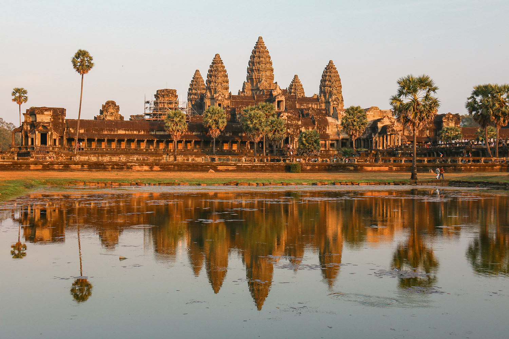

- 
-
-
🏯 Angkor - Cambodge 🌅
890€ TTC
-
-
🕌 Exploration des Temples d’Angkor
Visite d’Angkor Wat au lever du soleil 🌅 : L’image iconique du Cambodge, encore plus magique à l’aube.
Temple de Bayon 😊 : Célèbre pour ses 54 tours ornées de 216 visages sculptés.
Ta Prohm, le temple englouti par la jungle 🌳 : Surnommé le "temple de Tomb Raider", envahi par les racines des fromagers.
Banteay Srei, la "Citadelle des Femmes" 🏛️ : Sculptures incroyablement détaillées en grès rose.
Pre Rup au coucher du soleil 🌄 : Un des meilleurs spots pour une vue panoramique.
Beng Mealea, le temple oublié 🏚️ : Aventure hors des sentiers battus, dans un temple envahi par la végétation.
🚲 Aventures & Excursions
Balade en vélo ou tuk-tuk dans Angkor 🚲 : Parcourez les temples à votre rythme.
Tour en montgolfière au-dessus d’Angkor 🎈 : Vue à couper le souffle sur le site archéologique.
Excursion au lac Tonlé Sap 🚤 : Découvrez les villages flottants et leur mode de vie unique.
Randonnée sur le mont Phnom Kulen 🏞️ : Cascade rafraîchissante et rivière aux mille lingas sacrés.
Quad ou moto dans la campagne khmère 🏍️ : Partez à l’aventure à travers rizières et villages traditionnels.
🍜 Expériences Culturelles & Détente
Spectacle de danse Apsara 💃 : Découvrez l’art ancestral des danses traditionnelles khmères.
Cours de cuisine khmère 🍛 : Apprenez à préparer l’Amok (poisson au lait de coco) et d’autres spécialités.
Massage khmer traditionnel 💆♂️ : Idéal après une longue journée de marche.
Visite des marchés locaux de Siem Reap 🛍️ : Achetez soieries, bijoux en argent et sculptures sur bois.
Dégustation de street food cambodgienne 🍢 : Testez les brochettes, le Lok Lak et même… des insectes grillés !